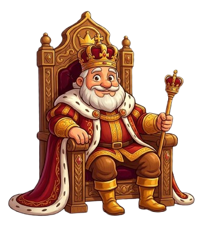
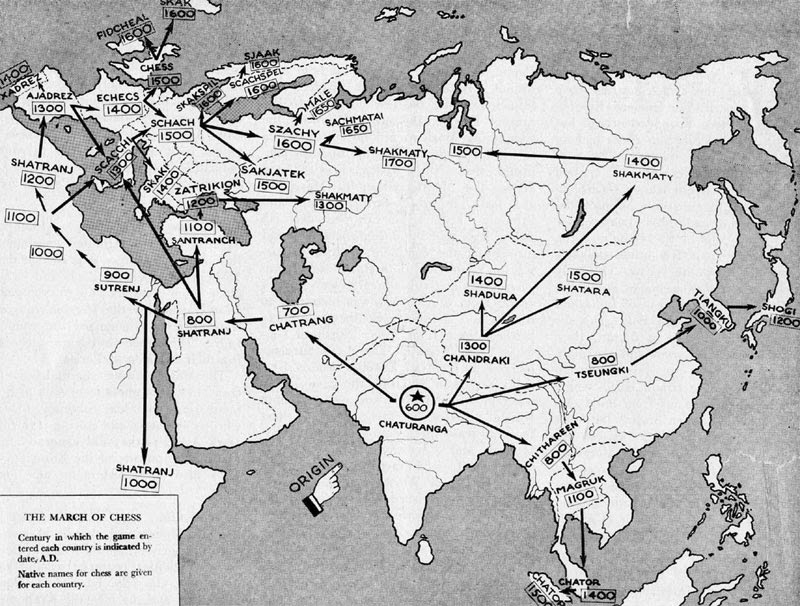
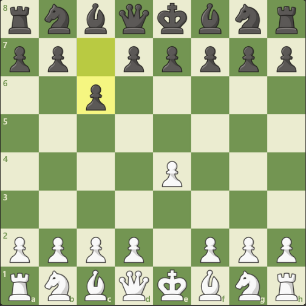
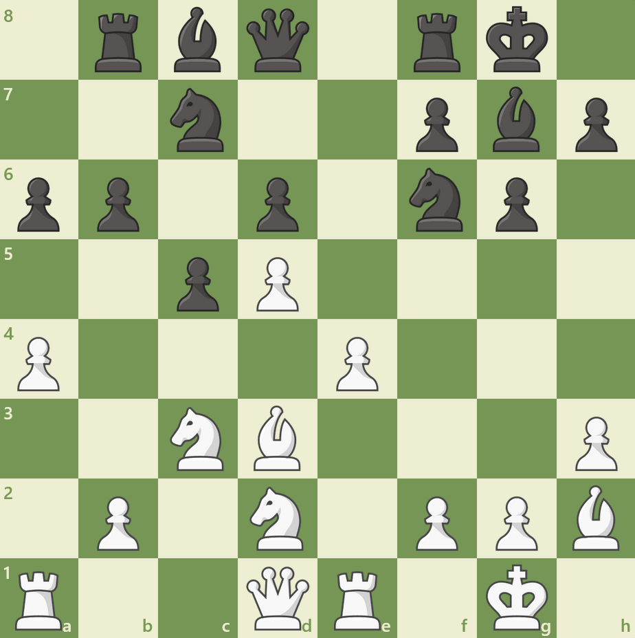
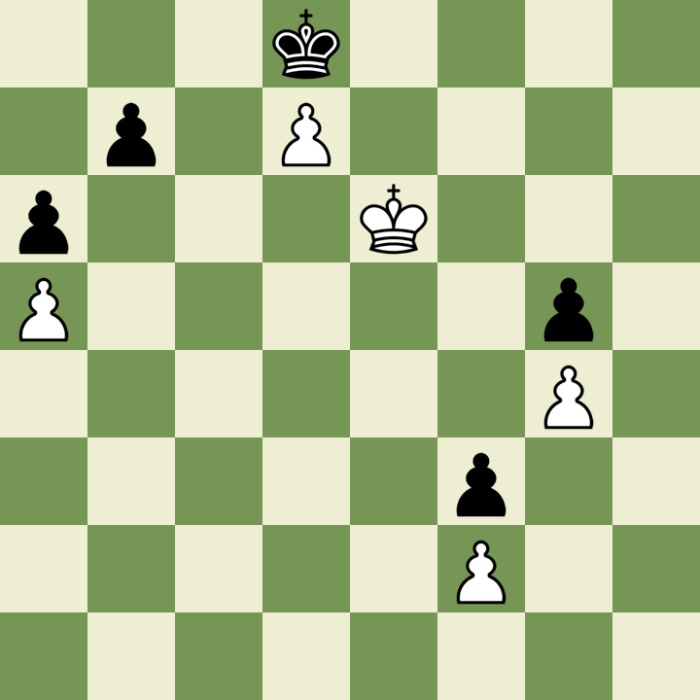

Путь к мастерству
I. История шахмат: Величие сквозь века
1. История шахмат насчитывает более полутора тысяч лет, беря своё начало в древней Индии под названием чатуранга. 2. Эта игра изначально задумывалась как имитация реального боя, где фигуры представляли разные роды войск индийской армии. 3. Из Индии шахматы попали в Персию, где получили новое имя — шатрандж, и стали неотъемлемой частью воспитания знати. 4. Именно персидская культура подарила миру термин «шах и мат», что буквально означает крах правящего монарха. 5. После арабского завоевания игра распространилась по всему Ближнему Востоку, где начали появляться первые научные анализы позиций. 6. В средние века шахматы проникли в Европу, где правила начали адаптироваться под рыцарские идеалы и феодальную иерархию. 7. Ключевая реформа произошла в XV веке, когда ферзь и слон стали намного мощнее, превратив медленную игру в яростную атаку. 8. В XIX веке были заложены основы современных спортивных шахмат и проведён первый в истории официальный турнир в Лондоне. 9. Появление компьютеров в конце XX века произвело новую революцию, сделав анализ партий доступным каждому желающему. 10. Сегодня шахматы — это не просто игра, а глобальный символ интеллекта, объединяющий людей всех культур и возрастов.

Карта распространения шахмат из Индии в Европу

II. Дебют: Фундамент будущей победы
1. Дебют является критически важной стадией партии, где закладываются все предпосылки для успеха в дальнейшей борьбе. 2. Основная цель первых ходов заключается в максимально быстром захвате центральных полей пешками для контроля пространства. 3. Владение центром позволяет вашим фигурам перемещаться по доске с максимальной скоростью и эффективностью. 4. Вторым незыблемым правилом дебюта является скорейшее развитие легких фигур, прежде всего коней и слонов. 5. Опытный игрок никогда не ходит одной и той же фигурой дважды в начале партии без веской на то причины. 6. Безопасность короля должна стоять на первом месте, что делает своевременную рокировку обязательным маневром для большинства партий. 7. Не стоит выводить ферзя слишком рано в игру, так как он может попасть под темповые атаки более слабых фигур соперника. 8. Дебютная теория содержит тысячи вариантов, но все они опираются на принципы гармонии и взаимодействия сил. 9. Плохая постановка дебюта может привести к катастрофическому положению уже к десятому ходу сражения. 10. Постоянное изучение классических начал помогает выработать стратегическое чутье и уверенность в собственных силах.
База дебютов Chess.com
III. Миттельшпиль: Психология и Тактика
1. Миттельшпиль — это самая сложная стадия шахматной партии, где после развития сил начинается прямое столкновение умов. 2. Здесь игроки должны уметь комбинировать тактический расчет с глубоким пониманием долгосрочных стратегических планов. 3. Тактические удары, такие как вилки и связки, часто становятся результатом накопленного позиционного преимущества над противником. 4. В миттельшпиле важно постоянно улучшать положение своих фигур, находя для них наиболее активные и защищённые поля. 5. Вы должны всегда искать слабые пункты в лагере соперника, такие как «отсталые» пешки или незащищённые фигуры. 6. Профилактика является важнейшим элементом мастерства: нужно предугадывать намерения врага ещё до их реального воплощения. 7. Координация ладей на открытых вертикалях часто становится решающим фактором при подготовке штурма вражеского короля. 8. Не забывайте о пешечной структуре, ведь именно она диктует, по какому сценарию будет развиваться дальнейшая атака. 9. В этой стадии игры психологическая устойчивость важна не меньше, чем умение рассчитывать сложные варианты на доске. 10. Мастерское владение миттельшпилем позволяет превратить даже самое незначительное преимущество в неизбежную победу.


IV. Эндшпиль: Мастерство в деталях
1. Эндшпиль представляет собой финальный этап сражения, когда на доске остаётся лишь несколько фигур и пара пешек. 2. В этой стадии роль короля радикально меняется: он обязан выйти из укрытия и стать активным боевым лидером. 3. Централизация короля в конце игры часто является ключевым условием для проведения пешки на последнюю горизонталь. 4. Главная цель большинства окончаний — это превращение пешки в ферзя, что кардинально меняет баланс сил в вашу пользу. 5. В эндшпиле цена каждого хода возрастает многократно, так как любая ошибка может мгновенно превратить победу в поражение. 6. Знание типичных матовых конструкций и правил оппозиции королей необходимо каждому, кто хочет побеждать стабильно. 7. Проходная пешка в эндшпиле часто становится «душой» позиции, вокруг которой строится вся стратегия обеих сторон. 8. Цугцванг — это уникальное положение, когда любой ход соперника ведёт к краху его обороны, что часто встречается в финалах. 9. Умение реализовывать даже минимальный материальный перевес требует от шахматиста предельной концентрации и аккуратности в расчетах. 10. Изучение классических окончаний является самым надежным способом поднять свой уровень игры до профессиональных высот.